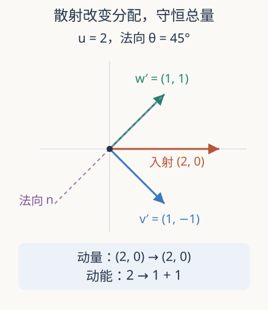

本页目录
动力学极限 02 · Boltzmann 碰撞：可逆的两球怎样产生统计熵增
两球碰撞可以倒放，气体却常从不均匀走向平衡。哪里引入了方向性？先修Liouville 与边缘。本讲先推导可逆散射，再分开讨论碰撞积分与极限闭合。
1. 从一次碰撞开始，不能先假设熵增
考虑等质量、光滑、无内部转动的硬球。碰撞前速度为 \(v,w\)，球心连线的单位向量为 \(n\)。相对速度 \(g=v-w\) 分成法向与切向；弹性无摩擦碰撞翻转法向相对速度，切向不变。因此
质心速度 \(V=(v+w)/2\) 不变，再由 \(v'=V+g'/2\)、\(w'=V-g'/2\) 得
把这个操作再做一次就恢复原速度，因为第一次已把 \(g\cdot n\) 反号。若粒子质量不同，质心分解中的权重也要改变；不能只保留这组等质量速度公式。这里的可逆性是能直接核对的恒等式，不依赖我们对气体的直觉。

2. 三类守恒量逐项检查
相加即得 \(v'+w'=v+w\)，所以动量守恒。能量可以用质心变量检查：
反射保持 \(|g|\)，因此总动能保持。粒子没有生成或消失，粒子数也保持。但单个粒子的动能通常会变，这正是速度分布可以改变的原因。
取二维 \(v=(2,0),w=(0,0)\)，\(n=(\cos\theta,\sin\theta)\)。散射后 \(v'=(2\sin^2\theta,-2\cos\theta\sin\theta)\)，\(w'=(2\cos^2\theta,2\cos\theta\sin\theta)\)。各自动能为 \(2\sin^2\theta\) 与 \(2\cos^2\theta\)，总和恒为 2。正碰 \(\theta=0\) 交换速度，掠碰 \(\theta=90^\circ\) 没有转移；两者都符合相同公式。
3. 从一对速度到碰撞算子
令 \(f(t,x,v)\) 为单粒子相空间密度。无外力时输运为 \(\partial_tf+v\cdot\nabla_xf\)；同一位置的碰撞增减速度为 \(v\) 的粒子，写成
这里省略相同的 \((t,x)\)，\(B\ge0\) 表示相对通量与散射截面；硬球法向参数化下与 \(|(v-w)\cdot n|\) 成比例，常数或半球约定可吸收到 \(B\) 中。第一项通过可逆碰撞换元表示增益，第二项是损失。统计乘积 \(f(v)f(w)\) 才是关键闭合，它不能只从一次碰撞公式推出。
若 \(\varphi\) 满足每次碰撞的 \(\varphi(v)+\varphi(w)=\varphi(v')+\varphi(w')\)，对称换元后有
取 \(\varphi=1,v,|v|^2/2\) 就把微观守恒提升为碰撞积分的守恒。积分换元需要对称的微观可逆核及可积性；任意编造一个非负核并不自动满足全部结论。
4. H 定理的符号从哪里来
在空间齐次或无边界熵通量的情形，取 \(H=\int f\log f\)。在正性与足够正则、可积条件下，用前面的对称性得到
原因只是对正数 \(A,C\)，差 \(A-C\) 与 \(\log A-\log C\) 同号。Boltzmann 的 \(H\) 下降对应物理熵 \(-H\) 上升，不能把两个符号混用。零分布处要通过极限约定处理，不能直接计算 \(\log0\)。
在合适的非退化碰撞模型中，零熵产生要求 \(\log f\) 为碰撞不变量，得到 Maxwell 分布 \(M(v)=C_0\exp[-|v-u|^2/(2T)]\)，\(T>0\)。这说明平衡由守恒矩参数化；它不表示任意初值在任意范数下、以一个统一速率立刻收敛。
5. 稀薄极限为什么不是忽略所有碰撞
单位体积内有 \(N\) 个直径 \(\varepsilon\) 的球。在 \(d\) 维，碰撞截面尺度是 \(\varepsilon^{d-1}\)，占据体积尺度是 \(\varepsilon^d\)。Boltzmann–Grad 缩放保持 \(N\varepsilon^{d-1}\) 为常数量级，却令 \(N\varepsilon^d\to0\)：气体占据体积越来越小，但单粒子碰撞率仍可保持有限。
困难来自重碰撞与共享碰撞历史。碰过的粒子会相关，有限系统不能在每次碰撞后无条件“重新独立”。2024 首稿、2025 修订的 Deng–Hani–Ma 工作将硬球到 Boltzmann 的推导延长到相应 Boltzmann 解存在且满足假设的时间范围，使用累积相关和碰撞图的控制。2025 环面版本还明确限定维数、初始随机集合、速度加权界与参数关系。
因此微观可逆与 H 定理没有代数矛盾：选取初始统计类、投影到少粒子观测、再取极限产生了有效不可逆描述。把精确轨道全部倒转，会带入特殊的相关初值，不能原封不动沿用正向混沌假设。研究成果推进的是这条限制明确的链，既不是所有物质模型的统一定理，也不是 Navier–Stokes 正则性问题的解答。
一个角度滑块不代表真实的碰撞统计
在实验里均匀改变法向角，是为了逐个检查几何散射，并不是声称气体的各个法向以相同概率出现。真实碰撞频率还乘相对通量，几乎掠过的两球和迎面相遇的两球权重不同；粒子的入射速度本身也来自分布。如果用均匀角度采样取代正确核，可能仍保留每次碰撞的动量和能量，却得到错误的宏观散射频率。
这提供了一个重要反例：守恒检查是必要的，但不是模型身份的充分检查。两个不同的碰撞核可以有完全相同的守恒量和同类平衡，却有不同的输运系数与松弛速率。研究黏性时，不能只报告总能量误差很小，就认定碰撞实现足够准确。
还可以比较两团相向运动的窄速度分布与同动能的 Maxwell 分布。它们可能有相同质量、零平均动量和相同温度，却有不同的高阶形状，前者一般不在碰撞平衡。守恒量决定允许到达哪些状态，碰撞机制与熵产生决定怎样改变形状。下一讲的四速实验正是把这个区别缩成能完全算清楚的有限模型，而不是用一次正碰代表热化过程。
6. 实验与迁移
先预测法向角 0、45、90 度时能量怎样分配，再改变入射速率。此实验逐次验证散射，不从两个球拟合气体分布。
默认静态结果：\(u=2,\theta=45^\circ\)；\(v'=(1,-1)\)、\(w'=(1,1)\)；总动量 \((2,0)\)，总动能 2，每个粒子动能 1。当速率加倍时动量加倍、能量变四倍。
题一。 把法向量换成 \(-n\) 会得到不同的碰撞吗？
独立作答后核对
不会。\([g\cdot(-n)](-n)=(g\cdot n)n\)，所以速度结果不变。角度积分若覆盖整个球面，要与只用入射半球的约定协调归一化，不能重复计数后仍使用原系数。
题二。 若保持体积分数 \(N\varepsilon^d\) 为非零常数而令半径趋零，能否照搬本讲有限碰撞率的论证？
独立作答后核对
不能；\(N\varepsilon^{d-1}\) 此时约为常数除以 \(\varepsilon\)，会发散。密集结构、时间缩放或相关修正需要另行处理。稀薄与流体尺度并不是一句“粒子很多”就能区分的。
速查与来源
| 对象 | 机制 | 条件 |
|---|---|---|
| 弹性散射 | \(g'=g-2(g\cdot n)n\) | 等质量、无摩擦 |
| 碰撞积分 | 增益减损失，含 \(ff_*\) | 统计闭合需证明 |
| H 定理 | \((A-C)\log(A/C)\ge0\) | 核对称、正则与可积条件 |
下一讲：从局部平衡到流体。实际访问 2026-09-08：Golse，2005 作者综述；长时间硬球推导，2024-08-14 首稿／2025-07-18 v3；Deng–Hani–Ma，2025-03-03，碰撞定义及定理 1。